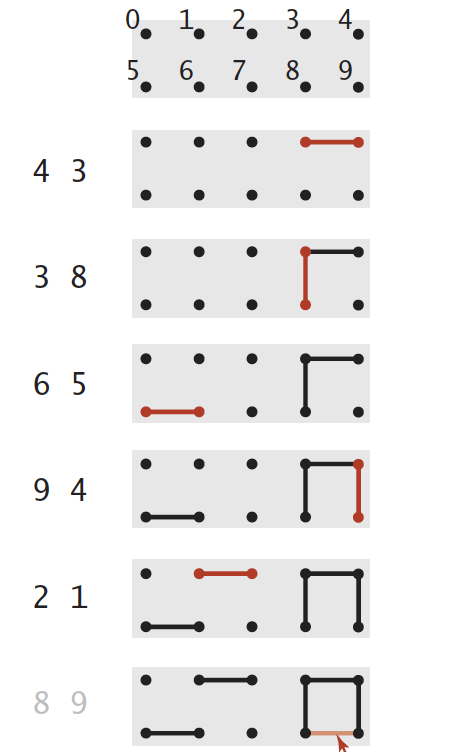

Scenario
In the following picture, it describes a scenario of Union Find.
Clarifications:
- Number p is connected to number q means there is a path from p to q.
- Pair(p, q) in the left means p and q should be connected to each other.
- Every time after receiving a pair(p, q), the program should connect p with q if p is not connected with q. Otherwise, ignore this pair.

Analysis
After reading the scenerio above, we should know the 3rd point in Clarifications is the problem we have to solve.
In order to achieve this goal, we should know whether there is a path(connectivity) from p to q(undirected) when receiving a pair(p, q). Therefore, the following things are what we should do:
- Save previous received information.
- Give a clear and easy way to check the connectivity of each given pair(p, q).
For simplicity, we take use of Array as the basic data structure.
e.g. array[1] = 1 and array[2] = 2 for number 1 and number 2 at the beginning.
Concepts
From above analysis, we are able to define the following concepts.
- Component: A component means a collection of numbers and all these numbers connect with each other.
API Degisn
Before getting started to solve these problems, it is important for us to define the APIs.
(Note: node is an alias of number here)// C++ version
class UnionFind {
public:
// Initialize nodes with size n
UnionFind(int n) {
for (size_t i = 0; i < n; ++i) {
nodes.push_back(i);
}
component_num = 0;
}
// Union two 2 nodes
void union_nodes(int p, int q) {}
// Find the component identifier of p
int find(int p) {}
// return current component num
int count() { return component_num;}
private:
vector<int> nodes;
int component_num;
};
---
Solutions
There are two kinds of solutions Quick-Union and Quick-Union with Path Compression;
Basic Solution: Quick-Union
Here, we will construct nodes with tree structure. Since our data structure is array, then each nodes’ value in array represents its father’s index, which means root nodes’ value is it own index.
Implementation of find and union_nodes:
int find(int p) { |
If you think about the above logic a little bit more in depth, you will find that if p from higher tree and q from lower tree always, then the new tree will grow higher every time after merging with other trees. So the advanced solution comes.
Advanced Solution: Quick-Union with Path Compression
Just imagine that the only thing we want to know is that wether given two numbers p ,q are in the same component which means their root are the same one. We do not care about the path from p -> q. So in order to save the time in every find operation, we could compress path between nodes with root by directly connect nodes with their root.
int find(int p) { |
Key Points
Union Find is a simple and friendly algorithm. It has the following important/unique features:
- Find nodes/items’ connectivity with static or dynamic input stream.
- The
deleteoperation is very very inefficient or expensive to implemented in Union Find, so if we have to handle this operation, it is better to convert it tounion_nodesoperation.
Example: Practive 5(Lintcode 1014)
Practice
Valid Graph Tree
From: LintCode 178
Difficulty: Medium
- Build Union-Find data structure, for each edges, run
union_nodes, if input p, q are already in the same component which means there exists a cycle, return false directly. After handling all edges, returncount() == 1. - Trick: In a valid tree,
nodes_num - edges_num == 1.
Surrounded Regions
From: LintCode 477
Difficulty: Medium
- Build Union-Find data structure, lookup all elements first, every 0 will try to connect with its surrounded 0s. Then, loop all elements again, for every 0, try to check
connected(current_0, peripheral_0s), if true, skip, otherwise, replace it with ‘X’. - Tricks:
- Every 0 can only try to connect with its left 0 and up 0.
- Connect all peripheral 0s with a virtual node(Typically its index is
n * m). Then replace connected check withconnected(current_0, virtual_node).
Number of Islands II
From: LintCode 434
Difficulty: Hard
- Build Union-find data structure, and initialize it. After receiving an operations
island_num++. And then try tounion_nodes(current_pos, left_up_right_bottom_pos). Inunion_nodes(), if two nodes are in same component, skip. Otherwise, merge them andisland_num--.
Bricks Falling when Hit
From: LintCode 1014
Difficulty: Hard
This problem is a little bit tough, since if we think about it conventionally, we have to implement the delete() operation of Union Find. So we will think about it in a new perspective and make the conversion of delete() -> dosomething() + union_nodes().
Rule: By adding hitted bricks back to the wall, we can get the new_added_num(falling_num) to top row with only union operation instead of delete operation.
Steps:
- Go through the matrix, construct the Union Find data structure, but skip bricks in hits.
- Loop hits from last to first, get
old_connected_numto top row bricks, try tounion_nodes(current_pos, left_up_right_bottom_pos), but still skip those in hits. If current node in hits, remove it from hits. getnew_connected_num. Then this round we knownew_connected_num - old_connected_numbricks will be falled.
Tricks: We should only keep root node containing the num of nodes in this tree. And the first row bricks will also have up_pos - virtual_node.
Comparation with DFS
It is faster to find connected components with DFS in a static graph, but with dynamic graph the Union Find will perform better.